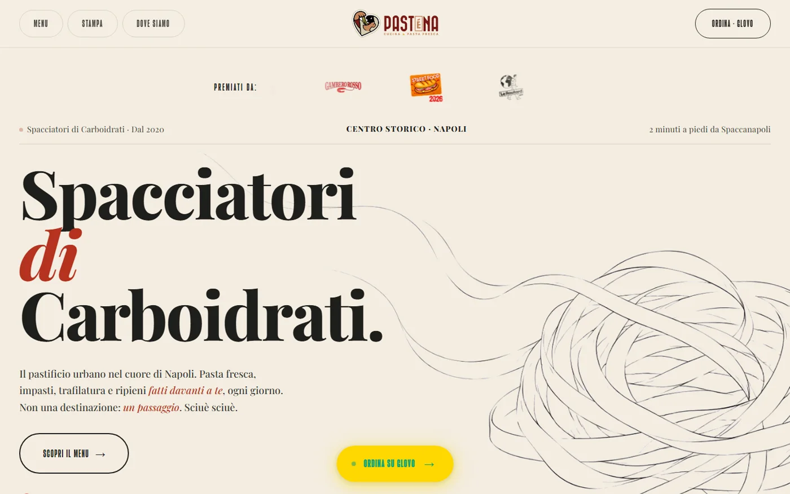
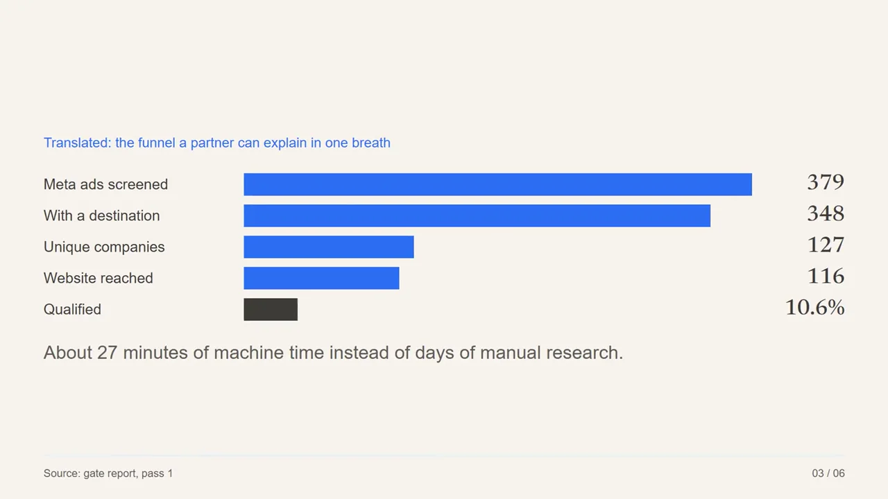
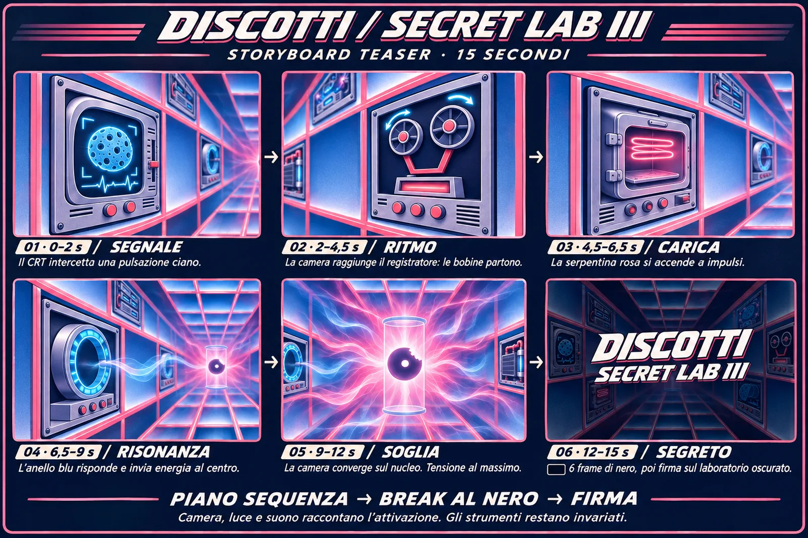
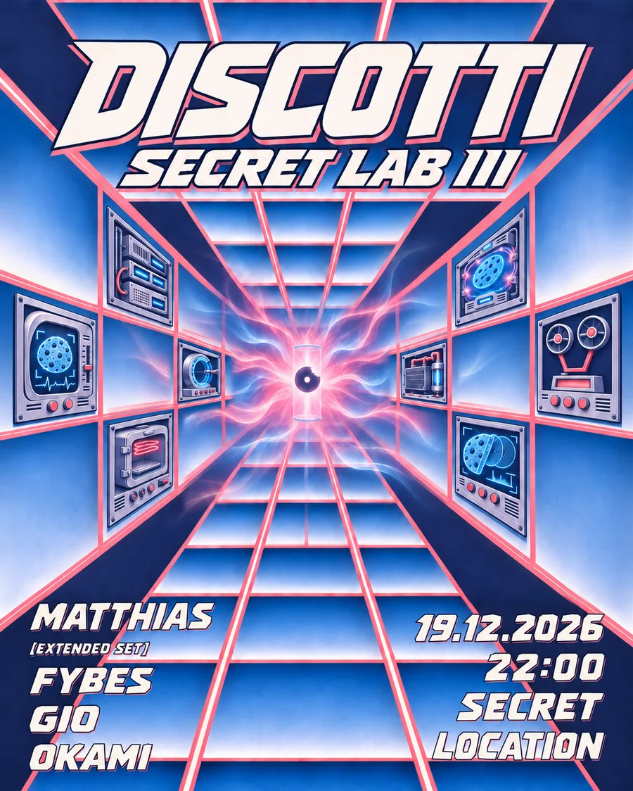
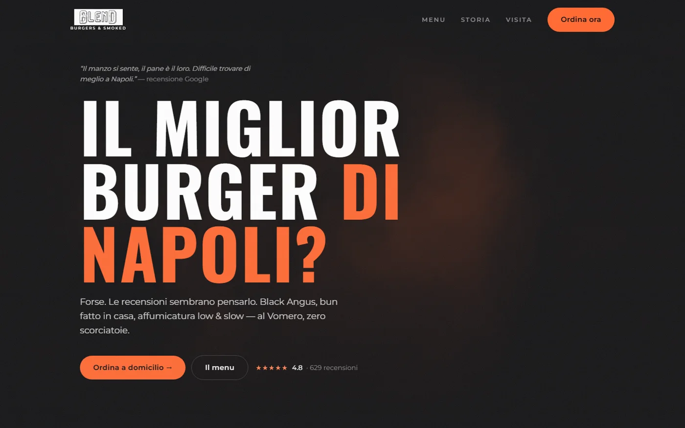
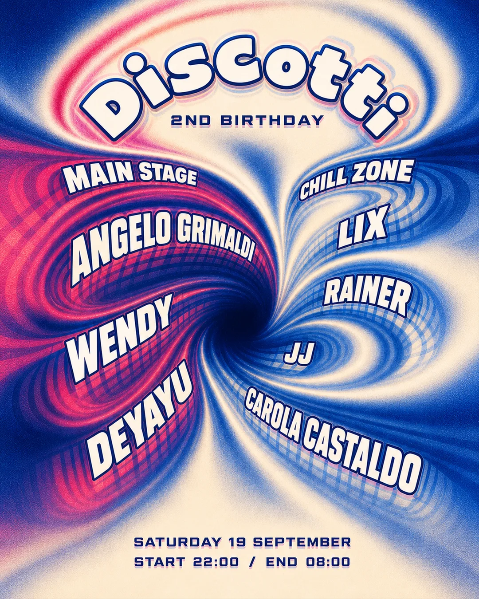
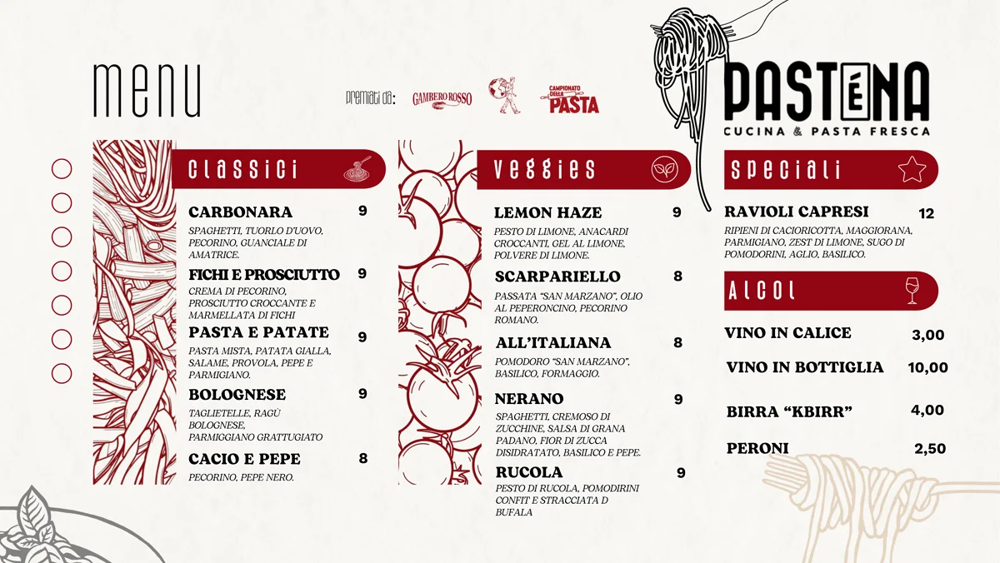
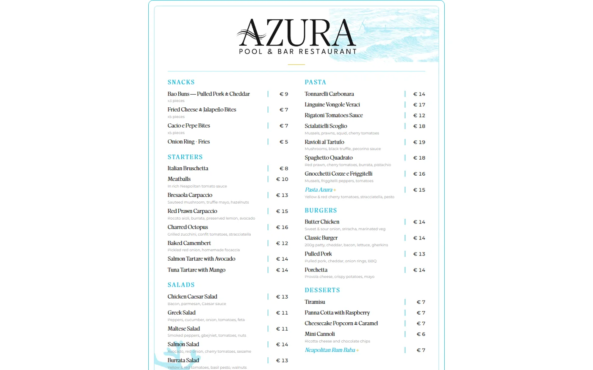

2026
AI content and front-end. I turn working prototypes into visuals, video and demos a client can follow.
See the workEngineers build things that work. I make them easy to present, reuse and put in front of a client.








I built a Python pipeline with Claude Code that screens Meta advertisers through ten checks. Then I made it presentable: the same run, read two ways.
$ python workchain.py --pass 1
[F1] ads collected, 18 keywords ...... 379
[F1] ad has a destination ............ 348
[F2] unique landing domains .......... 127
[F3] site reached, HTTP logged ....... 116
[F4] VAT re-read, VIES checked ....... W4 OK
[F4] region proven, never guessed .... W5 OK
[F8] deliverable share ............... 10.6%
[W1–W10] 10/10 gates green, exit 0On the same 116 companies, 1 decision-maker email could be verified and 78 published a phone number. The plan switched to calling.
The same story as a 51-second explainer: six scenes coded in HTML and cut with ffmpeg from a script, so it re-renders when the numbers change. Client name and records removed.
AI image into a 15-second camera move, rendered from code.
Technical result as a 51-second story.
Feed data turned into a hook for a hair-care brand.
Three numbers every gym owner should know.
Kinetic type for a screening reminder.
A six-second opener on stock footage.
Spec reels were made for applications and were not commissioned by the brands.
For Secret Lab III I took the brief from a group chat to print. AI generation for the base, then layout, lettering and fixes by hand. Every version is kept with the reason it changed.
Brief
Read what the engineers built and who has to present it.
Draft
A first version fast, with AI doing the heavy lifting.
Refine
Feedback rounds, by hand, until it reads at phone size.
Reuse
Hand over a kit: editable files, fonts, captions.
A working prototype becomes a 60-second video with captions, rebuilt from code whenever the numbers change.
A clean page a partner can open in a meeting, built with AI support on plain HTML or the team's stack.
AI-generated visuals finished by hand, in the firm's palette, sized for decks, posts and print.
Editable templates for case studies and offers, so other teams can make the next one without me.
One asset cut into reels, stories and carousels for LinkedIn and internal channels.
Menus, posters and handouts delivered print-ready, with the source files.
Scripts that gather and check sources, then a page that states the finding and the decision.
Avatars and podcast formats are next on my list. They are not in my portfolio yet, so I don't claim them.
My thesis was on independent music collectives. Now I design for one.